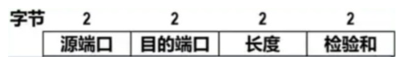

第 1 题
下列哪项功能不属于传输层提供的服务？
- A．对来自不同应用进程的数据进行复用。
- B．将数据分割成合适大小的报文段并编号。
- C．在广域网中进行拥塞控制。
- D．将数据报在多个可能的路径中选择一条进行转发。
答案与解析
答案：D
将数据报在多个可能的路径中选择一条进行转发即路由选择，是网络层的核心功能，故选择D。而A、B、C 均属于传输层提供的服务。传输层提供的服务有：①复用分用②端到端通信③可靠传输服务（TCP）④无连接服务（UDP）
⑥流量控制⑦拥塞控制⑧差错控制。
第 2 题
下列关于传输层端口号的叙述中，错误的是？
- A．端口号只具有本地意义，用于标识本计算机应用层中的各进程。
- B．端口号长度为16bit，能表示65536 个不同的端口。
- C．客户端程序可以使用除熟知端口号之外的任意端口与服务器建立连接。
- D．传输层的复用是指发送方可让多个应用进程使用同一个传输层协议。
答案与解析
答案：C
端口号是运输层的服务访问点(SAP)，只在本地主机上标识进程，故A 正确。16位二进制数可表示的范围是216= 65536，故B 正确。D 选项正确，这是运输层的复用功能。客户端程序使用的是操作系统临时分配的端口号（即短暂端口号，是除了熟知端口号和登记端口号之外的端口号）去连接服务器，故C 错误。
第 3 题
下列选项中，能在通信两端唯一标识一个特定TCP 连接的是（ ）。
- A．源IP 地址、目的IP 地址
- B．源端口号、目的端口号
- C．协议号（TCP）、目的IP 地址、目的端口号
- D．源IP、源端口、目的IP、目的端口
答案与解析
答案：D
一个TCP 连接是通过其两端的套接字来唯一确定的，套接字又由IP 地址和端口号拼接而成。因此，必须由通信双方的IP 地址和端口号共同组成的四元组才能在整个互联网中唯一地标识出这条连接。任何一个元素不同，都代表一条不同的连接。
第 4 题
用户在浏览器中输入http://hcl.baidu.com/并成功访问了该网站。在此通信过程中，客户端发起的TCP 报文段中，目的端口号是多少？
- A．25
- B．53
- C．80
- D．443
答案与解析
答案：C
http://说明使用的是HTTP (超文本传输协议)，它的熟知端口号为80，网址中没指明端口应用默认端口80，故选择C。443 是HTTPS 的熟知端口号，25 是SMTP 的熟知端口号。53 是DNS 的熟知端口号。
第 5 题
一台主机在同一时刻可以运行多个不同的网络应用程序。传输层能够将来自IP 层的数据正确地交付给相应的应用程序，这个过程称为？
- A．复用
- B．分用
- C．封装
- D．路由
答案与解析
答案：B
复用指在发送端，多个应用进程可以同时使用一个运输层协议（TCP 或UDP），并将数据流汇集起来发送。分用指在接收端，运输层根据报文段的端口号，将收到的数据分别交付给主机上正确的应用进程。题目描述的是接收端的行为，因此是分用。
第 6 题
某应用需要实现视频会议功能，对实时性要求很高，但允许偶尔丢失少量数据。为了获得最佳性能，该应用最适合使用的运输层服务是？
- A．提供可靠的面向连接服务
- B．提供不可靠的无连接服务
- C．提供拥塞控制服务
- D．提供流量控制服务
答案与解析
答案：B
视频会议等实时应用，对延迟非常敏感，而对偶尔的数据丢失不敏感（丢失一两帧画面影响不大）。TCP 为了保证可靠性，其重传机制会引入较大的延迟，不适合此类应用。UDP 提供无连接、不可靠的服务，没有重传机制，延迟小，非常适合视频会议等实时应用。
第 7 题
下列应用中，应当使用无连接服务的是（ ）。
- A．网上银行系统的用户登录。
- B．大容量文件的断点续传。
- C．向网络中的所有主机广播时间信息。
- D．远程终端访问（Telnet）。
答案与解析
答案：C
无连接服务的特点是快速、开销小，但不保证可靠。登录、文件传输、远程访问都要求数据100%准确无误、按序到达，必须使用可靠的面向连接服务。而广播时间信息，属于一种周期性的、少量数据的发送，对实时性要求高，且偶尔丢失一次信息影响不大，适合使用开销小的无连接服务。
第 8 题
下列选项中，使用UDP 服务的是（ ）。
- A．简单网络管理协议SNMP
- B．简单邮件传送协议SMTP
- C．远程终端协议TELNET
- D．文件传送协议FTP
答案与解析
答案：A
简单网络管理协议SNMP 用于网络设备的管理和状态监控，为了追求高效率和低开销，通常使用UDP。简单邮件传送协议SMTP用于发送电子邮件。邮件内容必须完整、准确地送达，因此SMTP 必须基于可靠的传输，需要使用TCP。远程终端协议TELNET 用于远程登录到另一台主机。用户输入的每一个字符和主机返回的每一个字符都必须按序、可靠地传输，否则会话将无法进行。因此选用TCP。文件传送协议FTP 用于在不同主机间传输文件。文件的完整性至关重要，任何比特的丢失或错误都可能导致文件损坏。因此FTP 需要使用TCP来保证可靠传输。
第 9 题
下列关于UDP 协议的说法中，错误的是（ ）。
- A．接收方UDP 发现收到的报文中目的端口不正确，会将该报文丢弃，并发送ICMP 差错报文。
- B．与IP 数据报不同，UDP 的校验和会将首部和数据部分一起都校验。
- C．UDP 之间的通信需要在两个套接字之间建立连接。
- D．伪首部仅用于计算UDP 校验和，不向下传送也不向上递交。
答案与解析
答案：C
虽然在UDP 之间的通信要用到其端口号，但由于UDP 的通信是无连接的，因此不需要使用套接字，而TCP之间的通信必须要在两个套接字之间建立连接，故选择C。如果接收方UDP发现收到的报文中的目的端口号不正确（即不存在对应于该端口号的应用进程），就丢弃该报文。并发送ICMP“端口不可达”差错报文给发送方，故A 正确。在计算校验和时，要在UDP 用户数据报之前增加12 个字节的伪首部，伪首部仅用于计算校验和，会和原UDP 数据报的首部和数据部分一起参与计算，故B、D 正确。
第 10 题
下列关于UDP 和TCP 的说法中，错误的是？
- A．TCP 提供流量控制，而UDP 不提供。
- B．TCP 提供拥塞控制，而UDP 不提供。
- C．TCP 首部开销比UDP 首部开销大。
- D．TCP 和UDP 都可以保证报文按序到达。
答案与解析
答案：D
TCP是面向连接的、可靠的协议，其首部中的序列号和确认号可以实现按序交付。接收方会根据序列号对失序的报文段进行重排序。而UDP 是无连接、不可靠的协议，其首部中没有序列号字段，因此它完全不保证报文的顺序，故选择D。
第 11 题
下列关于UDP 和TCP 的说法中，错误的是（ ）。
- A．TCP 仅支持单播，而UDP 单播、广播、多播均支持。
- B．TCP 提供可靠的传输，而UDP 提供不可靠的传输。
- C．TCP 和UDP 均使用因特网校验和对其首部和数据进行校验。
- D．对于应用层交下来的报文，TCP 和UDP均可以对报文进行合并拆分，无需保留这些报文的边界。
答案与解析
答案：D
UDP 是面向报文的，发送方的UDP 对应用程序交下来的报文，在添加首部后就向下交付IP 层。UDP 对应用层交下来的报文，既不合并，也不拆分，而是保留这些报文的边界。TCP是面向字节流的，不保证接收方应用程序所收到的数据块和发送方应用程序所发出的数据块具有对应大小的关系（例如，发送方应用层交给发送方的TCP 共10 个数据块，但接收方的TCP 可能只用了4 个数据块就把收到的字节流交付上层的应用程序）。
第 12 题
一个UDP 用户数据报，其首部中“长度”字段的值为1500，则该UDP 数据报的数据部分实际长度是多少字节？
- A．1500
- B．1492
- C．1480
- D．1472
答案与解析
答案：B
UDP 首部的“长度”字段记录的是整个UDP 数据报（包括首部和数据）的总长度。UDP 首部固定为8 字节。因此，数据部分的长度=总长度-首部长度，即1492B。
第 13 题
一个UDP 用户数据报的数据字段为8180B。网络层仅添加固定首部，在链路层，该数据报被封装在MTU 为1500 字节的以太网帧中传输。那么，最后一个IP 分片的数据字段长度是多少？
- A．1480B
- B．1500B
- C．780B
- D．788B
答案与解析
答案：D
应用层数据（UDP 的数据字段）为8180字节。在运输层，数据被交给UDP 协议。UDP会为其加上一个固定的8字节首部，形成一个UDP用户数据报。UDP用户数据报总长度 =UDP 数据字段+UDP 首部=8180B+8B=8188B。这个完整的UDP 用户数据报会作为IP 数据报的数据部分。因此，网络层需要传输的数据总长度为8188字节。链路层的最大传输单元（MTU）为1500字节。这限制了IP 数据报（包括IP 首部和IP 数据）的总长度不能超过1500 字节。IP 数据报的首部长度通常为20B。因此，一个IP 分片最多能承载的数据（即分片的数据字段）长度为：MTU-IP 首部长度 =1500B-20B=1480B。IP 分片时，除最后一个分片外，每个分片的数据字段长度都必须是8 字节的整数倍，1480 恰为8 的倍数，符合要求。8188/1480=5，即有5 个满载的分片，这5 个满载分片总共传输了的数据量为：5×1480B=7400B。剩余的数据将全部放入最后一个分片。最后一个分片的数据字段长度= 总数据长度-已发送数据长度=8188B-7400B=788B。
第 14 题
以下哪项不包含在UDP 伪首部中？
- A．源IP 地址
- B．UDP 长度
- C．协议字段
- D．源端口号
答案与解析
答案：D
UDP 伪首部是一个在计算校验和时临时添加的字段，它本身并不会随着UDP 报文在网络中传输。其目的是让校验和不仅能检查UDP 首部和数据，还能检查一部分IP 首部的信息，以增强校验能力。UDP校验包括源IP地址、目的IP地址、保留位（置为0）、协议字段（UDP为17）、UDP 长度五个部分组成。
第 15 题
现有一个以十六进制格式存储的一个UDP 首部：CB84 000D 001C 001C，则下列叙述正确的是（）。 I．源端口号为52096II．目的端口号为13III．该UDP 用户数据报的数据载荷长度为20BIV．该UDP 用户数据报是客户到服务器方向的

- A．II
- B．I、III
- C．II、IV
- D．II、III、IV
答案与解析
答案：D
I错误，源端口号为𝐶𝐵8416= 52100 ；II正确，目的端口号为000𝐷16= 13；III 正确，UDP 用户数据报长度为001𝐶16= 28𝐵，UDP 首部长度为28 −8 = 20𝐵； IV 正确，因为目的端口号为13（熟知端口号），所以该UDP 用户数据报是从客户到服务器的。答案选D。
第 16 题
已按勘误修正
一个UDP 数据报，其伪首部、UDP 首部（校验和字段置0）以及除最后16 位数据外的中间运算结果为CF01。数据报最后剩余的一个16 位数据字为34FF。则最后应填入校验和字段的值是（ ）。
- A．FBFF
- B．FBFE
- C．FC00
- D．0401
答案与解析
答案：B
CF01 和34FF 从低到高逐个相加，得到0000 0100 0000 0000，但由于最高位产生了进位，需要再加1，即0000 0100 0000 0001，取反码得到最终结果1111 1011 1111 1110，即FBFE。
勘误：D 选项已按勘误改为 0401。
第 17 题
下列关于TCP 和UDP 共同点的叙述中，正确的是（ ） I．都提供端口机制以实现进程标识II．都提供了差错校验机制III．都提供可靠的数据传输服务IV．都是面向字节流的协议
- A．仅I, II
- B．仅I, III
- C．仅II, IV
- D．仅I, II, IV
答案与解析
答案：A
I. TCP 和UDP 都有端口号，用于标识进程，正确。II. TCP 和UDP 首部都有16位的校验和字段，用于检测报文段在传输过程中是否出现差错，正确。III.只有TCP 提供可靠传输， UDP 是不可靠的，错误。IV. TCP 是面向字节流的，而UDP 是面向报文的，它保留了上层应用交付报文的边界，错误。因此，选A。
第 18 题
TCP 协议能够在一个提供数据报服务的网络层之上，为应用层提供可靠的、面向连接的字节流服务。其实现的关键技术不包括（）。
- A．对字节流进行分段和编号。
- B．使用确认和重传机制来保证不丢失。
- C．在网络节点中为TCP 连接预留带宽资源。
- D．使用滑动窗口进行流量控制。
答案与解析
答案：C
TCP 是运输层的协议，它工作在通信的两个端系统上，遵循“端到端”原则。它无法控制网络核心部分的行为，也无法命令路由器为某条TCP 连接预留任何资源。且TCP 协议使用IP协议提供的服务，IP 协议使用无连接不可靠的数据报，不会预留带宽资源。
第 19 题
下列关于TCP 报文段的说法中，正确的是（ ）。
- A．为了加快数据传送效率，TCP 仅校验其首部在传输过程中是否出现误码。
- B．TCP 报文段首部中的窗口字段用于指出TCP 报文段数据载荷部分的最大长度。
- C．TCP 报文段首部中的数据偏移字段实际指出了TCP 报文段的首部长度，其单位是字节。
- D．TCP 报文段首部中的紧急指针字段仅在URG 控制位置1 时才有意义，它以字节为单位。
答案与解析
答案：D
TCP 校验和覆盖范围包括TCP 伪首部、TCP 首部和数据部分，故A 错误。窗口字段用于流量控制，表示接收方当前还能接收的数据量，最大报文段长度MSS 在扩展首部中指出，故B 错误。数据偏移字段指出TCP 报文段的数据载荷部分的起始处距离TCP 报文段的起始处有多远，实际指出了TCP报文段的首部长度，但是其单位是4字节，故C错误。仅当紧急标志位URG置为1时，紧急指针有效；当发送方有紧急数据时，可将紧急数据“插队”到发送缓存的最前面，并立刻封装到一个TCP 报文段中进行发送；紧急指针会指出本报文段数据载荷部分包含了多长的紧急数据，紧急数据之后是普通数据，接收方收到报文后，会根据紧急指针的值从数据载荷部分取出紧急数据直接上交应用进程，而不必在接收缓存中排队，故D 正确。
第 20 题
主机A 和主机B 建立了TCP 连接，正在传输数据时主机A 的应用程序突然发生崩溃，随后主机A 向主机B 发送了一个TCP 报文段，则该报文段首部的哪个字段会置为1？
- A．SYN
- B．FIN
- C．RST
- D．PSH
答案与解析
答案：C
SYN 标志位是同步位，仅在TCP 连接建立时的“三次握手”阶段使用，用于发起一个新连接并同步初始序号，与终止连接无关，故A 错误。FIN 标志位用于正常、有序地关闭TCP连接，发起方表明自己已无数据要发送，从而启动“四次挥手”的正常释放流程，这与应用程序崩溃的突发、异常情况不符，故B 错误。PSH 是推送标志位，用于告知接收方尽快将数据交付给应用进程，而无需等待缓冲区填满，它涉及的是数据传输的效率而非连接管理，故D 错误。RST 标志位的作用是异常地、强制地终止一个连接，通知主机B 不必再发送数据，并立即释放连接资源，故C 正确。
第 21 题
TCP 双方基于长度为2000m 的链路传送数据，信号在该链路上的传播速率为200,0 00km/s，该链路的时延带宽积为1000b，如果充分利用链路的带宽且不考虑流量控制，则TCP 出现序号绕回的周期约为（）。
- A．42.9𝑠
- B．343.6𝑠
- C．687.2𝑠
- D．996.4𝑠
答案与解析
答案：B
TCP 是面向字节流的，其首部中的序号字段长度为32 位，用来表示该报文段数据载荷部分第一个字节的序号，也可以看作报文段的序号，当序号字段取到最大值后，下一个序号从最小值0 重新开始，这被称为序号绕回，故序号绕回周期即为发送232B 数据所花费的时间。时延带宽积 =传播时延*带宽，以此可求带宽为100Mb/s。用总数据量除以带宽可得最终结果，约为343.6s。
第 22 题
下列关于IP、TCP、UDP 协议的说法中，错误的是（ ）。
- A．IP、TCP、UDP 协议均使用因特网校验和算法，但IP 协议的校验和仅覆盖其首部。
- B．IP 协议根据IP 地址实现主机到主机的通信，而TCP 和UDP 协议则根据端口号实现进程到进程的通信。
- C．TCP 协议提供面向连接的可靠服务，而IP 和UDP 协议均提供无连接的、尽力而为的服务。
- D．TCP 和UDP 协议的首部长度都是固定的，其中UDP 为8 字节，TCP 为20 字节。
答案与解析
答案：D
UDP 协议的首部由源端口、目的端口、长度、校验和四个字段组成，每个字段2字节，其长度是固定的8 字节；但TCP 协议的首部除了20 字节的固定部分外，还包含一个可变长的选项字段，因此TCP 首部的长度不是固定的，其范围是20 字节到60 字节，故D 错误。
第 23 题
下列关于TCP 连接建立过程的说法中，正确的是（ ）。
- A．为防止旧连接请求报文段的干扰，两端主机在建立TCP 连接时其初始序列号都固定为0。
- B．三次握手中的第二个报文段（SYN-ACK）既不消耗序列号，也不能携带应用数据。
- C．客户端发送第三次握手报文段后进入ESTABLISHED 状态，服务器接收到该ACK 后才进入ESTABLISHED 状态。
- D．在“三次握手”过程中，任何一个报文段丢失，TCP 都会立即释放连接并重新执行完整的三次握手。
答案与解析
答案：C
为防止旧连接请求报文段的干扰，两端主机在建立TCP 连接时初始序列号是随机的，故A 错误。三次握手中第二个报文段的SYN 和ACK 字段均需置为1，不能携带应用数据，但是必须消耗一个序列号，故B 错误。在“三次握手”过程中，如果报文段丢失，TCP 会使用超市重传机制来重发丢失的报文段，而非立即释放重新执行“三次握手”，故D 错误。客户端在发送完三次握手中的最后一个ACK 报文后，认为连接已成功建立，单方面进入ESTABLISHED 状态并可以开始发送数据。而服务器必须在接收到这个ACK 报文后，才能确认客户端已收到自己的SYN-ACK，此时服务器才会进入ESTABLISHED 状态，C 正确。
第 24 题
下列关于TCP 连接的说法中，正确的是（ ）。
- A．TCP 连接请求报文段不能携带数据，但也会消耗一个序号。
- B．“三次握手”中三个报文段的SYN 均需要置为1，但只有第一次握手的ACK 为0。
- C．数据传输结束后，仅客户端可以主动关闭，释放连接。
- D．当客户端发送FIN=1 的释放报文后，既不能继续发送数据，也不能继续接收数据。
答案与解析
答案：A
在三次握手建立TCP 连接中，客户端发送的第一个连接请求报文段（SYN 段）不携带应用层数据，但其SYN 标志位本身需要消耗一个序列号，A 正确。三次握手中的第三个报文段是客户端对服务器SYN 的确认，其SYN 标志位为0，故B 错误。TCP 连接是全双工的，通信的任何一方（无论是客户端还是服务器）都可以在数据传输结束后主动发起连接释放请求（即发送第一个FIN段），故C 错误。TCP 支持“半关闭”，当一方（如客户端）发送FIN 段后，仅表示该方向的数据传输已结束，但它仍然可以接收来自对方的数据，直到对方也发送FIN 段来关闭另一个方向的连接，故D 错误。
第 25 题
假设主机H 与服务器建立TCP 连接。H 首先请求断开连接。在连接释放过程中，服务器对H的FIN 段的确认（ACK）与服务器自己发出的FIN 段合并在同一个报文段中发送。则主机H 将跳过以下哪个状态？
- A．FIN_WAIT_1
- B．FIN_WAIT_2
- C．TIME_WAIT
- D．ESTABLISHED
答案与解析
答案：B
在标准的四次挥手中，主机H 发送FIN 后进入FIN_WAIT_1状态；收到服务器的ACK 后进入FIN_WAIT_2状态，等待服务器的FIN。题中服务器将ACK 和FIN 合并发送，这意味着H 在FIN_WAIT_1状态下直接收到了对自身FIN的确认以及服务器的FIN请求。根据TCP状态机，H 会直接发送最后一个ACK 并跃迁至TIME_WAIT状态，因此FIN_WAIT_2这个中间等待状态被跳过，故B 正确。
第 26 题
主机甲向主机乙发送了一个TCP 段，有效载荷为500 字节。一段时间后，甲收到了乙发来的确认，确认号为1200。若该段是按序到达的，则甲发送的这个TCP 段的起始序列号是（ ）。
- A．500
- B．700
- C．800
- D．1200
答案与解析
答案：B
TCP 的确认号指的是“期望收到的下一个字节的序号”。设该段的起始序列号为seq，数据长度为500。接收方正确接收该段后，期望的下一个字节序号就是seq+500。根据题意， ack=seq+500，则可得seq 为700。
第 27 题
主机A 与主机B 建立TCP 连接后，发送的第一个数据段序列号为1000，经过一段时间的数据交换后，A 收到了来自B 的TCP 段，其确认号为3000。若传输过程中无任何重传发生，则A 已经成功向B 发送了多少字节的应用层数据？（ ）
- A．1999
- B．2000
- C．2001
- D．3000
答案与解析
答案：B
发送的第一个数据段序列号为1000，收到的确认号为3000，则说明1000-2999 已经被发送并正确接收，故A 已经成功向B 发送了2999-1000+1=2000B 的应用层数据。
第 28 题
主机甲向主机乙发送了3 个连续的TCP 段P1,P2,P3，每个段的载荷分别为100B、200B 和300B，其中P1 的序列号为300。若乙仅接收到P1 和P3，则乙收到P3 后，会向甲发送的确认号是 （）。
- A．300
- B．400
- C．600
- D．900
答案与解析
答案：B
TCP 采用累计确认，接收方只对按序到达的、连续字节流的最高序号进行确认。虽然乙收到了P3，但由于中间的P2 丢失，字节流在序号399 之后就断开了。因此，乙无法确认序号大于399 的数据。它仍在等待从序号400 开始的数据来填补空洞，因此乙向甲发送的确认号仍然是400。
第 29 题
主机甲向主机乙发送一个（SYN=1，seq=1000）的TCP 段，期望建立连接。主机乙接受该连接请求，并回应一个（SYN=1, ACK=1, seq=8000, ack=1001）的TCP 段。若该TCP 段在网络中正常传输，则主机甲收到后，向主机乙发送的正确的报文段可能是（）。
- A．SYN=0，ACK=1, seq=1001, ack=8001
- B．SYN=0，ACK=1, seq=1000, ack=8001
- C．SYN=0，ACK=1, seq=1001, ack=8000
- D．SYN=1，ACK=1, seq=1001, ack=8001
答案与解析
答案：A
主机甲的初始报文段（SYN=1, seq=1000）消耗一个序号1000，因此甲的下一个可用序号是1001。主机乙的回应报文段（SYN=1, ACK=1, seq=8000, ack=1001）也消耗一个序号8000。甲收到乙的回应后，需要发送确认报文段。该报文段的序号(seq)应为甲的下一个可用序号，即1001；确认号(ack)应为乙的序号加1，即8000+1=8001。此时连接已在建立过程中，SYN标志位应为0，而ACK 标志位必须为1。
第 30 题
若主机甲主动发起一个和主机乙的TCP 连接，甲、乙选择的初始序号分别为2021 和2022，则主机甲发送的第二个TCP 段的序号和确认序号分别是
- A．2021,2022
- B．2022,2022
- C．2022,2023
- D．2023,2023
答案与解析
答案：C